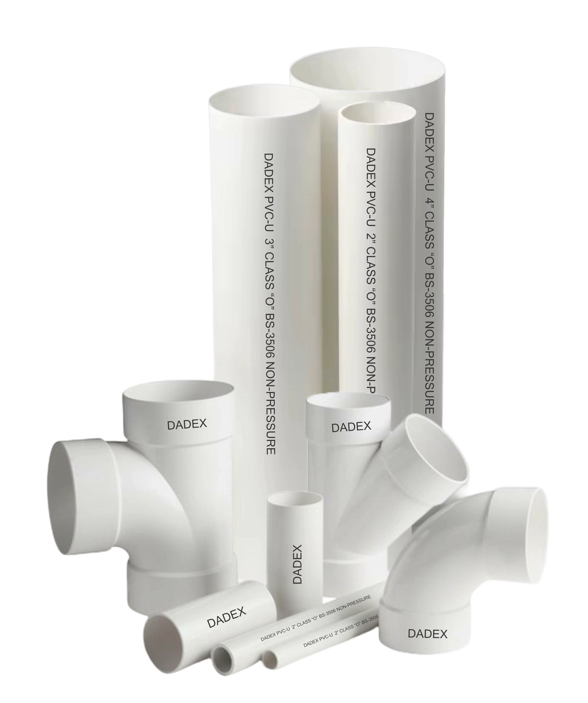

ASTM UPVC SWV System
A complete UPVC soil, waste, and ventilation piping solution engineered for reliable internal building drainage networks.

Reliable building drainage
The Dadex ASTM-based UPVC soil, waste, and ventilation system is designed for internal sanitary drainage networks. Tailored to regional market dynamics, it offers robust white pipes manufactured in accordance with ASTM D-2241 (SDR series) and BS-3506 (Class O) standards, paired with universal ASTM D-2466 Schedule 40 socket-type fittings.
Where the ASTM SWV System can be used
- Internal sanitary drainage networks
- Soil and waste discharge systems
- Ventilation piping
- Residential and commercial buildings
The smooth bore and non-corrosive material ensure efficient flow and long-term reliability.
Specifications & Product Range
Key technical characteristics and available dimensions of the ASTM-based UPVC SWV system.
| Material | Unplasticised Polyvinyl Chloride (PVC-U / UPVC) |
|---|---|
| Appearance | White colour |
| Standards & Specifications | Pipes manufactured as per ASTM D-2241 (SDR-26, 32.5, 41), ASTM D-1785 (SCH-40), and BS-3506 (Class O non-pressure). Fittings manufactured as per ASTM D-2466 Schedule 40. |
| Available Range | Sizes available in 2", 3", 4", and 6" nominal diameters. |
| Jointing Method | Solvent cement socket jointing with universal socket engagement across lines. |
Proper installation for leak-free drainage.
Using solvent cement jointing with ASTM D-2466 socket-type fittings and compatible white pipes ensures a durable, watertight building drainage system.
Installation considerations
- Cut pipes squarely and deburr edges before jointing.
- Clean pipe and fitting surfaces thoroughly when applying solvent cement.
- Ensure correct alignment during socket engagement.
- Provide adequate support brackets to prevent pipe sagging.
Refer to the relevant product documentation for detailed installation instructions.
Technical Resources


Let's find the right drainage solution for your project.
Contact Dadex for product information, technical guidance and project-related enquiries.